Key Takeaways
- Applies account lockout rules to the built‑in local Administrator account.
- Prevents unlimited brute‑force password attempts on the local admin account.
- Enabled automatically in new builds.
- Improves the overall security of windows devices.
Hey, let’s learn about Control Built-in Administrator Account Lockout after Failed Sign-In Attempts using Microsoft Intune. The Allow Administrator Lockout policy is a Windows security setting that specifically applies to the built‑in local Administrator account. Prevents unlimited brute‑force password attempts on the local Administrator account. It only affects the local built‑in Administrator, not domain admins. If enabled, the account follows the same lockout thresholds as other accounts.
Table of Contents
What are the Advantages of this Policy?
Here are the main advantages of enabling the Allow Administrator Lockout policy in Windows environments:
1. The built‑in local Administrator account is no longer immune to lockout rules, stopping unlimited password attempts via RDP or network logons.
2. Demonstrates proactive security controls during regulatory reviews.
3. Ensures the local Administrator follows the same lockout thresholds as other accounts, simplifying policy management.
4. Configured via Group Policy, Intune CSP, or PowerShell, making it adaptable across environments.
Enable or Disable Allow Administrator Lockout Using Intune
Allow Administrator lockout policy security setting determines whether the built-in Administrator account is subject to account lockout policy. If the policy enabled, Local Administrator is subject to lockout rules. If it disabled, the built‑in local Administrator account is exempt from account lockout policies.
How to Create the Allow Administrator Lockout Policy
To create the Allow Administrator Lockout policy, first you have to sign-in Microsoft Intune admin center. Click devices on the left side of the screen, select configuration then click on create and select new policy for creating a policy.

Create a Profile of Allow Administrator Lockout Policy
Select new policy to begin the creation of the policy profile. In this window, select windows 10 and later as the platform and settings catalog as the profile type. After selecting these options, click create to proceed with the policy configuration.
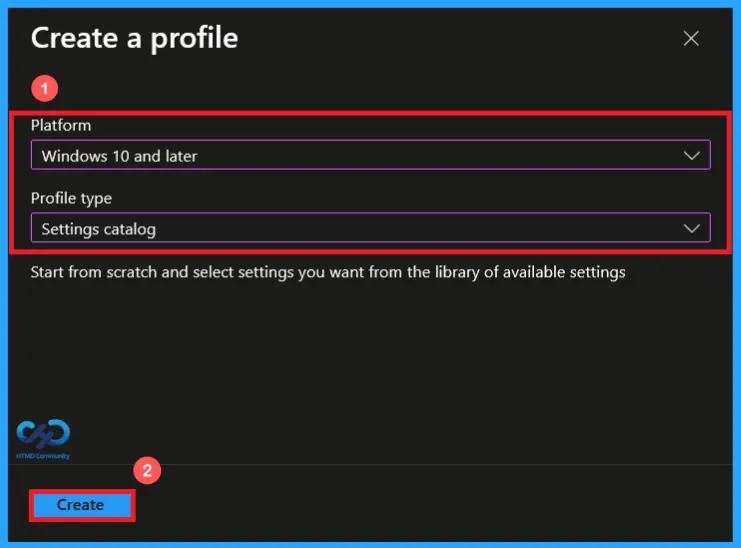
Basics Tab of Allow Administrator Lockout Policy
On the Basics page. Enter a unique name and an optional description to clearly identify the policy. Here, I gave a proper name as Allow Administrator Lockout for the policy and description as setting determines whether the built-in Administrator account is subject to account lockout policy. Then click on next to continue
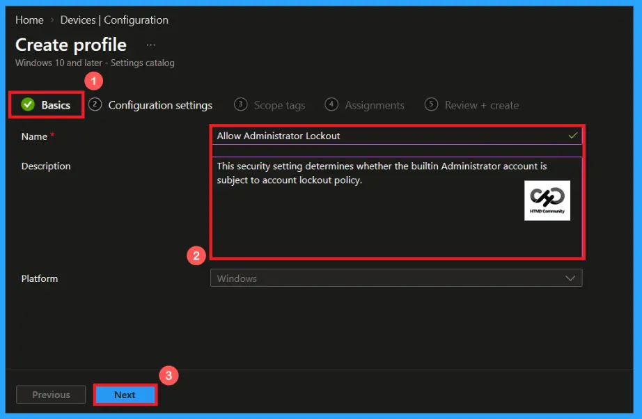
Configuration settings of Allow Administrator Lockout Policy
In the configuration settings section, click +Add settings to open the settings picker. From the available categories, select Device lock and choose allow administrator lockout. After selecting the required setting, click next to continue.
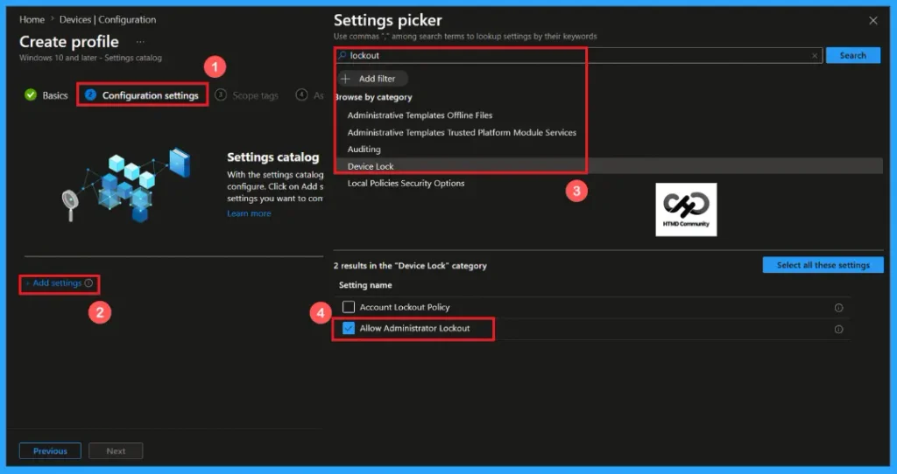
Default Value of Allow Administrator Lockout Policy
The allow administrator lockout policy has a default value “1″. When the allow administrator lockout policy enabled, the built-in administrator account can be locked out after the configured number of unsuccessful sign-in attempts. This helps protect the administrator account against brute-force and password-guessing attacks.
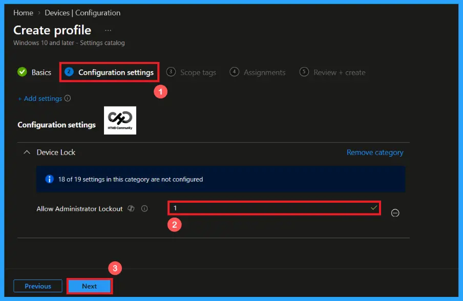
Disable the Allow Administrator Lockout Policy
Provide “0″ to disable the allow administrator lockout policy. If the Allow Administrator Lockout policy is disabled, the built‑in local Administrator account is exempt from lockout rules. Disabling this policy may fail CIS, NIST, or STIG baselines. Microsoft and security baselines strongly recommend keeping this policy enabled. After selecting the value click next to continue
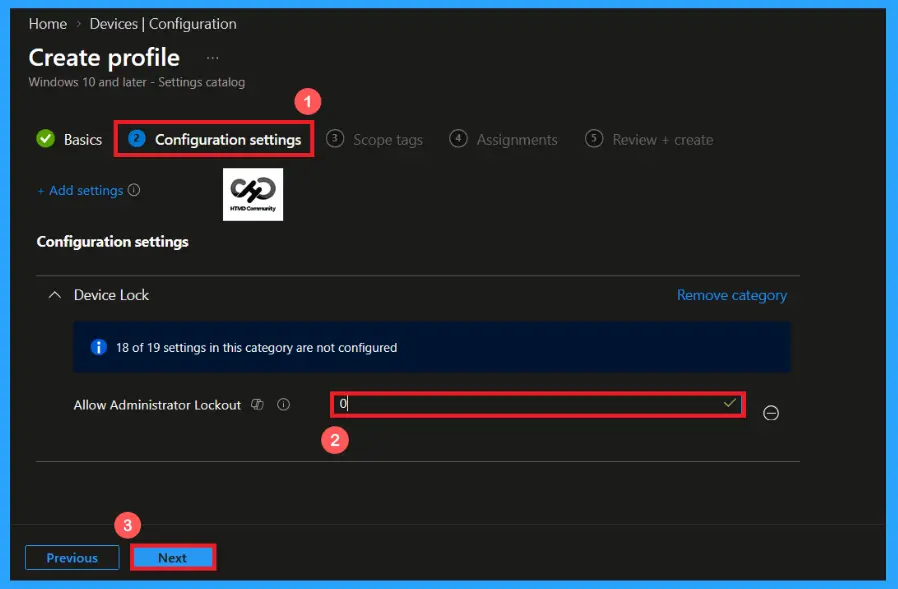
Scope Tag Settings of Allow Administrator Lockout Policy
A scope tag in Intune helps to organize and manage Intune resources based on administrative roles. Adding a scope tag is not mandatory. If needed, select the appropriate scope tag by clicking the select scope tags button. Here I selected the London scope tag. After selecting the scope tag, click on next to continue.

Add Groups using Assignment Tab
Use the assignment section to specify the users or devices that will receive the policy. Click on Add groups to add a group to the policy. Then search for the appropriate group, here I selected the HTMD – Test policy. After providing the group, click on next to continue.
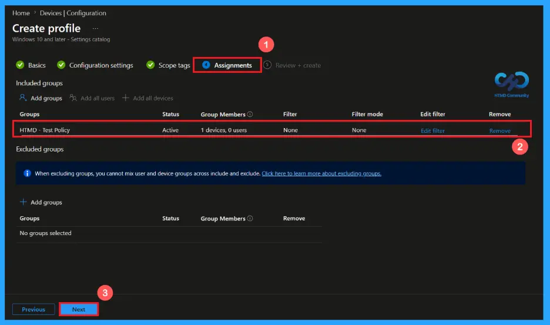
Verify and Create the Policy
After reviewing the configured settings, proceed by selecting create to finalize the policy. If any changes are needed, use the previous option to make changes. After clicking the create button, a confirmation notification will appear, indicating that the allow administrator lockout policy has been created successfully.
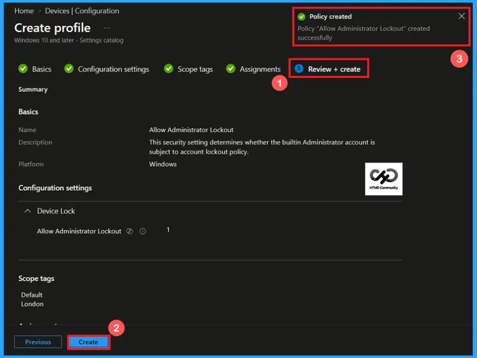
Device and User Check-in Status
After policy deployment, the Device and User Check-in Status helps administrators confirm whether the allow administrator lockout policy has been successfully applied to targeted devices and users. Open the policy from Microsoft Intune, then review the device and user check-in status to verify whether the status has shown succeeded (1).
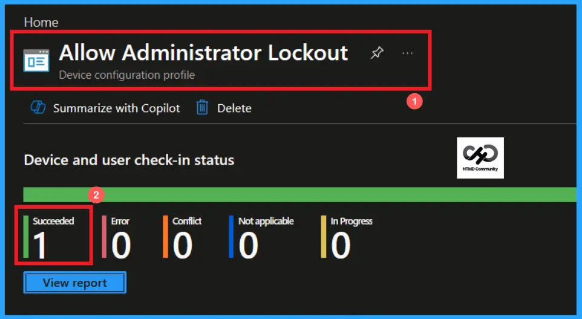
Client-side Verification of Allow Administrator Lockout Policy
To confirm that the policy has been successfully applied on a client device, open Event viewer and navigate to Applications and services logs> Microsoft> Windows> Device management enterprise diagnostic provider> Admin. Use the filter current login option to locate Event Id 813.
MDM PolicyManager: Set policy int, Policy: (AllowAdministratorLockout), Area: (DeviceLock),
EnrollmentID requesting merge: (EB427D85-802F-46D9-A3E2-D5B414587F63), Current User:
(Device), Int: (0x1), Enrollment Type: (0x6), Scope: (0x0).
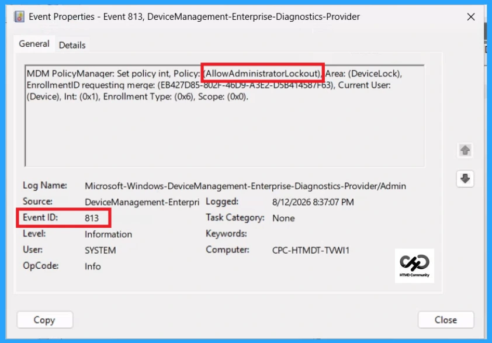
Configuration Service Provider (CSP)
The Configuration Service Provider (CSP) defines how windows configuration settings are managed through Microsoft Intune. Ensuring consistent policy deployment across Windows 10 and 11 devices. It explains what each policy does, what settings or values can be used, and how it connects to older Group Policy settings (Group Policy Mapping details).
Description framework properties: The following table shows the description framework properties of allow administrator lockout policy.
| Property name | Property value |
|---|---|
| Format | int |
| Access Type | Add, Delete, Get, Replace |
| Allowed Values | Range: [0-1] |
| Default Value | 1 |
Group policy mapping:
- Name – Allow Administrator account lockout
- Path – Windows Settings > Security Settings > Account Policies > Account Lockout Policy
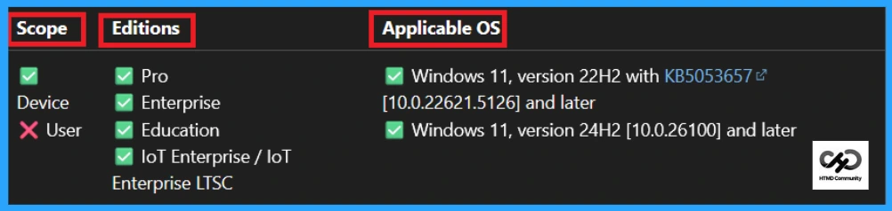
How to Remove the Assigned Group from Allow Administrator Lockout Policy
You can easily remove an assigned group from a policy, go to the devices>configuration and search for the Allow Administrator Lockout policy. Click on the Edit button on the Assignment tab then click on Remove button on this section to remove the policy and click Review + Save after making the change.
Detailed information, you can refer to our previous post – Learn How to Delete or Remove App Assignment from Intune using by Step-by-Step Guide.
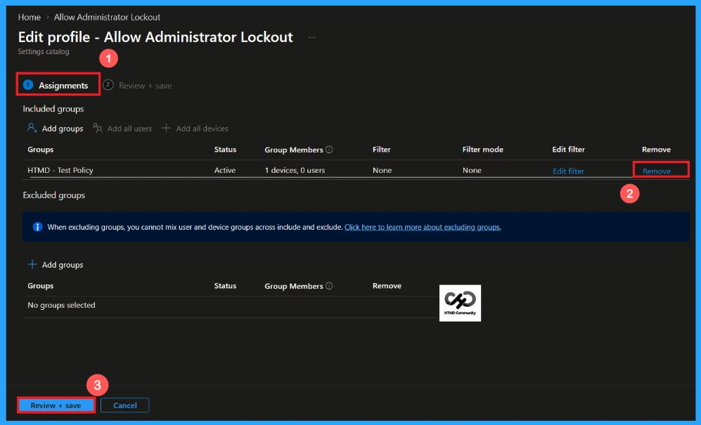
How to Delete the Allow Administrator Lockout Policy from Intune Portal
If you want to delete this policy for any reason. Open the Microsoft Intune admin center and search for the Allow Administrator Lockout Policy from configuration section. After finding the policy, click on the 3-dot menu next to it and tap the Delete option.
Detailed information, you can refer to our previous post – Learn How to Delete or Remove App Assignment from Intune using by Step-by-Step Guide.
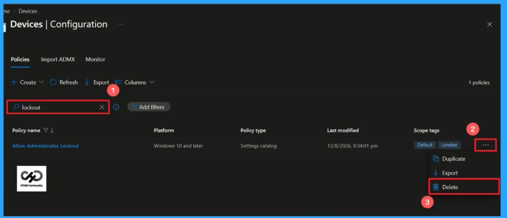
Need Further Assistance or Have Technical Questions?
Join the LinkedIn Page and Telegram group to get the latest step-by-step guides and news updates. Join our Meetup Page to participate in User group meetings. Also, Join the WhatsApp Community and WhatsApp Channel to get the latest news on Microsoft Technologies. We are there on Reddit as well.
Author
Anoop C Nair is Workplace Technology solution architect with 25+ years of experience in global enterprise organizations such as JP Morgan, Capgemini, etc. He is Microsoft Certified Trainer. Microsoft MVP from 2015 onwards for consecutive 11 years! He also conducts Intune and modern workplace tech training for enterprise organizations. He is Blogger, Speaker, and Founder of HTMD Community and HTMD Conference. His focus is on Device Management technologies such as Intune, Windows, Cloud PC. He writes about technologies like Intune, SCCM, Windows, Cloud PC, Windows, Entra, Microsoft Security.